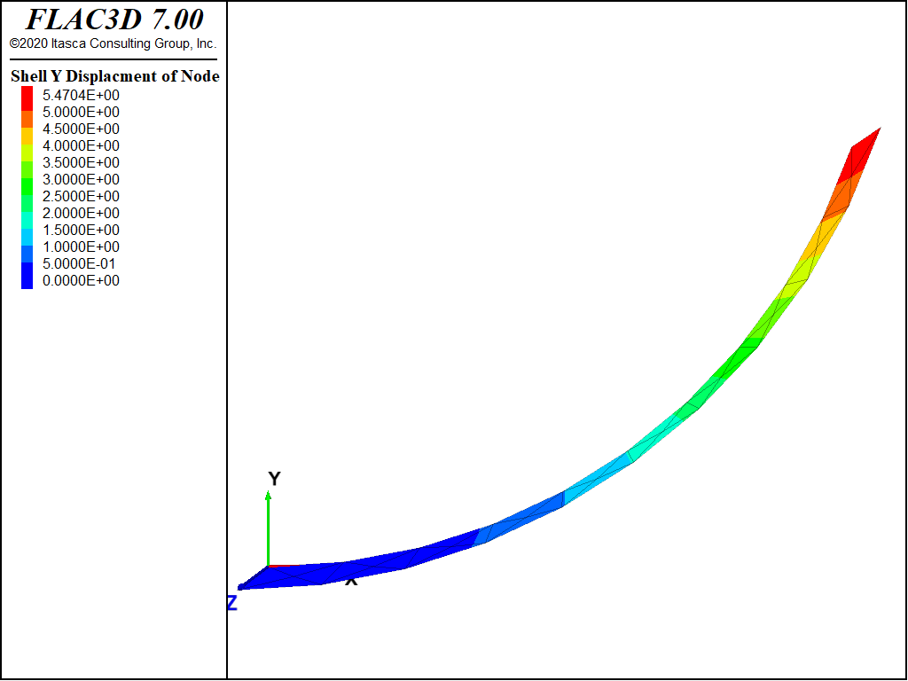

端部施加力矩的悬臂梁——壳单元
问题描述
注意
要在 FLAC3D 中查看该项目，请使用菜单命令 。选择 “Structure/Shell/Cantilever” 并选中 “Cantilever.f3prj” 载入。所用 主数据文件（main data files） 示于本例末尾。其余数据文件可在该项目中找到。
悬臂梁端部承受施加力矩，如 端部施加力矩的悬臂梁——梁单元（Cantilever Beam with Applied Moment at Tip — Beam Elements） 所述。这里用壳单元重现该问题，以计算梁端大应变 \(y\) 方向挠度。
FLAC3D 模型模拟长 10 m、高 1 m 的梁。采用交叉对角网格模式以确保响应对称，并采用 DKT-CST 杂交壳单元（DKT-CST Hybrid Shell Element）。把杨氏模量与泊松比分别设为 200 GPa 与 0。把壳厚度设为 0.133887 m，使二次矩 \(I\) 等于 200 × 10-6 m4。左端在全部六个自由度上完全固定。端部施加的总力矩为 5 MN-m，其中一半赋给端部两个节点各一。
最终结构形态示于 图 1（Figure 1）。梁端 \(y\) 方向挠度等于 5.471 m，与解析解相差 0.1% 以内。


图 1：最终结构形态。
参考文献
Cook, R. D., D. S. Malkus and M. E. Plesha. Concepts and Applications of Finite Element Analysis, Third Edition. New York: John Wiley & Sons Inc. (1989).
数据文件
Cantilever.dat
model new
model title ...
"Cantilever beam (using shell elements), applied tip moment (large-strain)"
; 创建壳单元并指定参数
struct shell create by-quad (0,0,0) (10,0,0) (10,0,1) (0,0,1) size (10,1) ...
cross-diagonal element-type=dkt-csth
struct shell property isotropic=(2e11, 0.0) thick=0.133887
; 边界条件
struct node fix velocity rotation range position-x=0
; 完全固定左端
struct node fix velocity-z rotation-x rotation-y
; 约束非梁变形模态
struct node apply moment=(0,0,2.5e6) range position-x=10
; 求解模型
model large-strain on
model solve ratio-local 1e-7
model save 'Cantilever'
⇐ Simple Beam — Two Equal Concentrated Loads — Shell Elements | Plastic Hinge Formation in a Shell Structure ⇒
| 这些内容对您有帮助吗？… | FLAC3D © 2019, Itasca | 原文更新于 2020 年 10 月 8 日 |